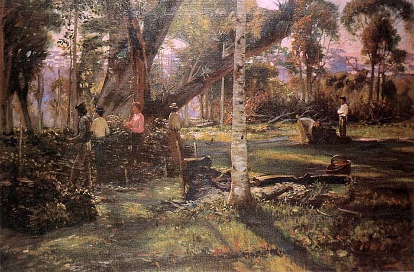
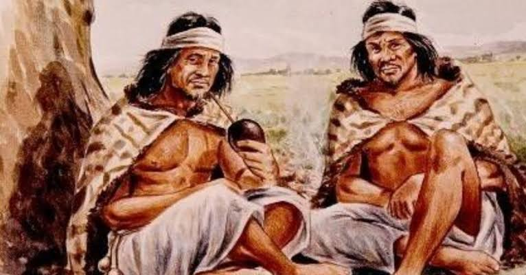

Cultura, História e Identidade
Neste site, será apresentado o tema da erva-mate na arte paranaense, mostrando como essa planta está presente na história, na cultura e na identidade do Paraná. Serão exploradas obras, imagens e manifestações artísticas que representam o cultivo, a produção e o consumo da erva-mate, destacando sua importância para a formação cultural do estado. A relação entre a erva-mate e a arte revela como esse elemento da vida paranaense se tornou parte da memória e da identidade de seu povo.

A História da Erva-Mate
A erva-mate é uma planta nativa do Sul da América do Sul e já era utilizada pelos povos indígenas, principalmente os Guarani e Charrua, antes da chegada dos europeus. No Paraná, sua exploração começou a ganhar força no século XIX, quando a produção e o comércio cresceram, dando origem ao chamado Ciclo da Erva-Mate. A atividade tornou-se muito importante para a economia paranaense, envolvendo indígenas, trabalhadores, tropeiros, comerciantes e produtores. erva-mate também contribuiu para o crescimento de cidades, estradas e ferrovias, principalmente entre Curitiba e o litoral. Com o passar do tempo, a erva-mate deixou de ser apenas um produto econômico e passou a representar parte da identidade cultural do Paraná. Sua presença na arte, na arquitetura e nos símbolos do estado mostra como a erva-mate está ligada à história e à cultura paranaense.

Importância Cultural
A erva-mate é importante para a arte e a cultura do Paraná porque representa parte da história, da identidade e das tradições do estado. Ela aparece em pinturas, fotografias, esculturas, exposições e também em símbolos oficiais, como a bandeira e o brasão do Paraná. Um exemplo é a obra “Sapeco da erva-mate”, do artista Alfredo Andersen, que representa o trabalho ligado à produção do mate. A erva-mate também aparece nas obras de Poty Lazzarotto, que retratou trabalhadores, tropeiros, paisagens e elementos da história paranaense. Além disso, o Movimento Paranista, principalmente nas décadas de 1920 e 1930, utilizou a erva-mate como um dos elementos para representar a identidade do Paraná, junto com a araucária, o pinhão e outros símbolos da natureza local.
